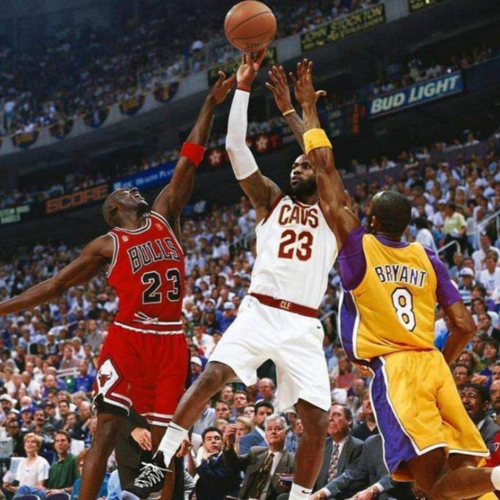

PORTRAIT CHINOIS
Elrick HADJEE
Bienvenue sur mon portrait chinois !
Dans le cadre de mes études en BUT MMI,
j’ai eu comme projet de réaliser un Portrait Chinois.
Il s’agit de présenter des traits de
personnalité par
identification à des objets, personnes ou éléments. Je vous invite à lire le mien en cliquant sur la
flèche ci-dessous. Bonne lecture !
LE NOIR

Si j'étais une couleur, je serais le noir
Le noir n’est pas au sens strict du terme une couleur. Il se dissocie des autres couleurs, tout comme le blanc, et s’associe à bon nombres de symboles. Le noir est pour moi la couleur de la classe, de la sobriété. Il représente aussi bien des significations positives que négatives ce qui représente bien, à mes yeux, la vie en elle-même. Le noir crée donc un certain équilibre.
LE PHÉNIX

Si j'étais une créature légendaire,
je serais le Phénix
Le Phénix est un oiseau fabuleux doté d’une extraordinaire longévité, qui avait le pouvoir de
renaître de ses cendres, en oisillon, après s’être consumé dans ses flammes. Le phénix est
majestueux et se reproduit lui-même à l'identique, ce qui est pour moi une forme
d'indépendence.
Le Phénix est d'une symbolique importante car il symbolise la renaissance et l’immortalité, d'où
l’expression « renaître de ses cendres » qui signifie savoir rebondir après un échec et qu’on en
tire les leçons pour ne plus reproduire les mêmes erreurs.
LE BASKET-BALL
Si j'étais un sport,
je serais le basket-ball
Le basketball est pour moi le meilleur sport au monde ! C’est un sport très complet qui travaille aussi bien la vitesse, les muscles que la détente. Le basket-ball, on peut le partager en jouant à plusieurs, ou bien s’entraîner tout seul. Il favorise l’individu car on peut s’entraîner et progresser seul avec un simple ballon et on peut y jouer à plusieurs car c’est un sport collectif, et l’esprit d’équipe est quelque chose qui me parle aussi. Et on va pas se mentir, le basket c'est quand même stylé !
LA MUSIQUE

Si j'étais un des 7 arts,
je serais la musique
La musique est pour moi la plus belle forme d'art car c'est l'art qui se partage le mieux et qu'on peut facilement créer. De plus, la musique n'a pas de forme. Elle transmet des émotions par le son et c'est à nous d'en faire notre propre idée. La musique est un excellent moyen d'expression. Quand j'écoute ou compose de la musique, je sais que j'ai ma propre perception de celle-ci et qu'elle sera différente pour chaque personne. Je pense que la musique a ce pouvoir de nous lier toutes et tous.
ROCKY
Si j'étais une saga, je serais Rocky
La saga Rocky est l'une de mes favorites, où l'on suit la vie de Rocky Balboa, qui s'est battu et qui revient de loin, passant de petit boxeur à mi-temps assez pauvre à champion de boxe devenant une figure emblématique de Philadelphie. Mais son status de célèbre champion ne le rendra pas vraiment heureux pour autant. Ce que j'aime dans cette saga est qu'on le voit évoluer à travers chaque film, que malgré les apparences, il reste un humain qui a des craintes et des peurs, surtout quand il s'agit de faire le meilleur pour sa famille, et qu'il faut les "cogner" pour en être plus fort.
BAD
Si j'étais un album, je serais Bad
Bad est le 7ème album studio de Michael Jackson. C’est un album qui m’a particulièrement marqué, que j’écoute depuis que je suis tout petit, et que j’écoute toujours d’ailleurs. C’est un album puissant de part de ses nombreuses sonorités très originales mêlant pop et rock, qui sont très propres aux années 80 mais surtout à son style, ainsi que ses mélodies et refrains efficaces qui rentrent facilement en tête. Cet album a été conçu pour estomper le côté "gentil garçon" de MJ. Et ça marche ! On ressent vraiment cette volonté tout au long de l'album. On passe de titres percutants et dansants à des titres plus doux, puis de sons joyeux à plus froids… De plus, l'album s'accompagne de clips de grande qualité qui sont plus ou moins liés. C’est tout simplement mon album préféré du Roi de la Pop.
RILÈS

Si j'étais un artiste, je serais Rilès
Rilès est un véritable artiste talentueux et polyvalent. Il chante et rappe en anglais, il produit, mixe et masterise tous ses titres, il joue divers instruments, il peint ou encore réalise ses pochettes et ses clips. En 2016, il se lance le défi de sortir un titre par semaine pendant un an, ce qui a permis au youtuber Seb de le repérer, de faire une vidéo consacré à lui et à le faire connaître par une bonne partie de son audience. Il a su créé un univers singulier, mêlant sonorités en tous genre, que ce soit du rap, du R&B, du gospel ou encore des chants traditionnels. Son univers tourne également autour du temps. Finalement, je trouve qu'il a plutôt un côté MMI, et c'est ce qui m'a en grande partie incité à m'intéresser davantage aux domaines du design et de l'audiovisuel.